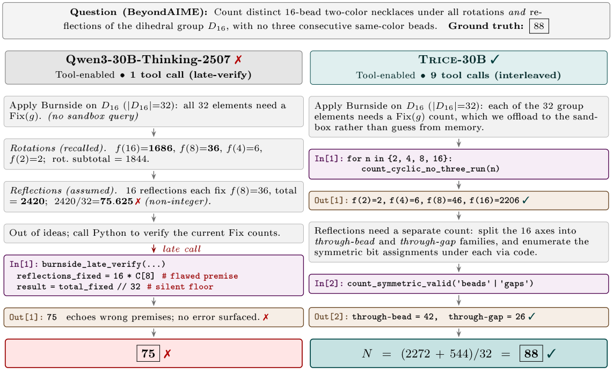
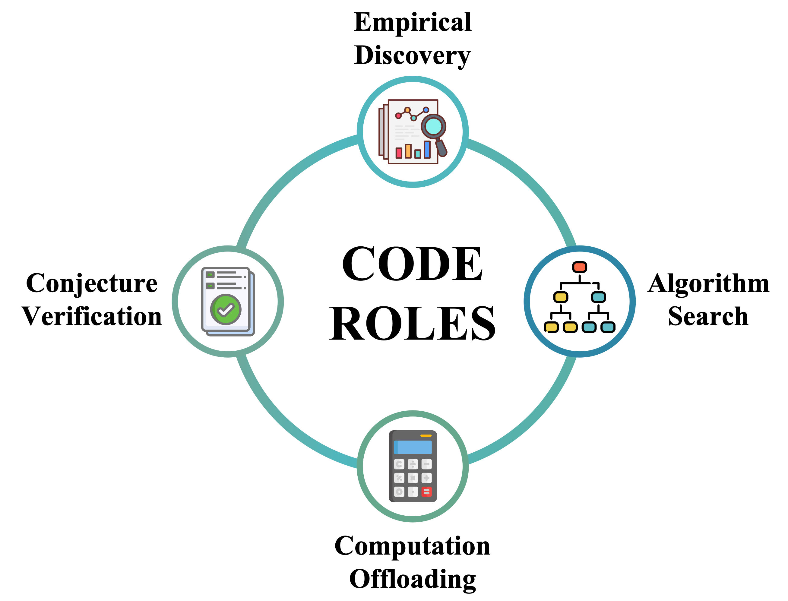

Tool-Integrated Reasoning
Teaching Thinking Models to Reason with Tools
A Full-Pipeline Recipe for Tool-Integrated Reasoning
AIME 2025 Leaderboard
<10B Scale
~30B Scale
Abstract
Tool-integrated reasoning (TIR) offers a direct way to extend thinking models beyond the limits of text-only reasoning. Paradoxically, we observe that tool-enabled evaluation can degrade reasoning performance even when the strong thinking models make almost no actual tool calls.

reflections_fixed = 16*C[8]). A silent integer floor masks the error, leading to the incorrect result 75 ✗.
Right: TRICE-30B interleaves textual reasoning with code execution, feeding each intermediate result back into the same Burnside framework, and correctly obtains 88 ✓.
In this paper, we investigate how to inject natural tool-use behavior into a strong thinking model without sacrificing its no-tool reasoning ability, and present a comprehensive TIR recipe. We highlight that (i) the effectiveness of TIR supervised fine-tuning (SFT) hinges on the learnability of teacher trajectories, which should prioritize problems inherently suited for tool-augmented solutions; (ii) controlling the proportion of tool-use trajectories could mitigate the catastrophic forgetting of text-only reasoning capacity; (iii) optimizing for pass@k and response length instead of training loss could maximize TIR SFT gains while preserving headroom for reinforcement learning (RL) exploration; (iv) a stable RL with verifiable rewards (RLVR) stage, built upon suitable SFT initialization and explicit safeguards against mode collapse, provides a simple yet remarkably effective solution. When applied to Qwen3 thinking models at 4B and 30B scales, our recipe yields models that achieve state-of-the-art performance in a wide range of benchmarks among open-source models, such as 96.7% and 99.2% on AIME 2025 for 4B and 30B, respectively.
Method
A Full-Pipeline Recipe for TIR
Teaching a strong thinking model to reason with tools without sacrificing text-only reasoning requires a systematic recipe spanning data preparation, SFT, the transition from SFT to RL, and RL itself.
Data Engineering for TIR SFT
Curate learnable TIR supervision while preserving text-only reasoning ability.
Teacher selection should account for the learnability of tool-use patterns, not teacher accuracy alone.
Tool-advantaged problems better elicit useful tool-use trajectories from the teacher.
Mix text-only trajectories into the TIR set to preserve the student's native reasoning capability.
Filtering overlong teacher trajectories improves downstream RL efficiency and reduces length imitation.
Stage Coordination: From SFT to RL
A principled execution of fine-tuning is needed to fully unlock TIR within the holistic training pipeline.
During TIR SFT, what the student learns evolves across form, substance, and noise.
We identify RL-ready SFT checkpoints by tracking pass@k performance and rollout length.
Using on-policy rollouts together with rollout routing replay is simple but necessary.
Main Results
State-of-the-art Tool-Integrated Reasoning
| Model | Tool | AIME25 | HMMT25 | BeyondAIME | IMOAnswerBench | APEX25 | Avg. |
|---|---|---|---|---|---|---|---|
| <10B scale | |||||||
| Qwen3-4B-Thinking-2507 | ✗ | 82.5 | 68.8 | 54.3 | 57.0 | 2.8 | 58.2 |
| Qwen3.5-4B | ✗ | 75.8 | 72.9 | 58.8 | 59.5 | 0.0 | 60.6 |
| Qwen3.5-9B | ✗ | 85.8 | 82.1 | 67.3 | 65.0 | 0.0 | 67.2 |
| TRICE-4B | ✗ | 79.2 | 71.3 | 58.5 | 61.0 | 5.6 | 61.7 |
| ASTER-4B† | ✓ | 90.0 | 77.1 | 61.7 | -- | -- | -- |
| AgentMath-8B† | ✓ | 84.7 | 71.3 | -- | -- | -- | -- |
| TRICE-4B | ✓ | 96.7 | 86.7 | 71.3 | 68.9 | 13.9 | 72.2 |
| ~30B scale | |||||||
| Qwen3-30B-A3B-Instruct-2507 | ✗ | 67.5 | 55.8 | 51.3 | 52.3 | 2.8 | 52.5 |
| Qwen3-30B-A3B-Thinking-2507 | ✗ | 88.8 | 75.6 | 65.9 | 66.1 | 0.0 | 67.1 |
| Qwen3.5-35B-A3B | ✗ | 94.2 | 85.8 | 72.5 | 73.8 | 0.0 | 74.7 |
| TRICE-30B | ✗ | 89.2 | 81.7 | 71.0 | 72.3 | 0.0 | 72.8 |
| GPT-OSS-20B | ✓ | 86.7 | 83.3 | 63.0 | 60.0 | 8.3 | 63.4 |
| GLM-4.7-Flash | ✓ | 95.0 | 84.2 | 76.0 | 68.3 | 11.1 | 71.6 |
| Nemotron-3-Nano-30B-A3B | ✓ | 96.7 | 90.4 | 80.0 | 77.0 | 11.1 | 78.8 |
| AgentMath-30B-A3B† | ✓ | 86.4 | 73.8 | -- | -- | -- | -- |
| GLM-4.7-Flash w/ recipe | ✓ | 98.3 | 89.6 | 81.0 | 78.8 | 13.9 | 80.3 |
| TRICE-30B | ✓ | 99.2 | 92.5 | 82.5 | 80.3 | 16.7 | 81.9 |
Performance comparison on competition-level mathematical benchmarks. Results are accuracy (%) under each model's indicated inference setting. Models marked with † are reported by concurrent TIR systems under their original protocols; all other results follow our unified protocol. GLM-4.7-Flash w/ recipe shows that the pipeline is not specific to a single model family and can further improve models with native TIR ability.
Generalization
Math-trained TIR Generalizes Beyond Math
| Model | Tool | FrontierScience | GPQA-Diamond | LiveCodeBench |
|---|---|---|---|---|
| Qwen3-4B-Thinking-2507 | ✗ | 27.5 | 64.4 | 51.4 |
| TRICE-4B | ✓ | 42.0 +14.5 | 68.8 +4.4 | 55.6 +4.2 |
| Qwen3-30B-A3B-Thinking-2507 | ✗ | 44.9 | 71.2 | 61.5 |
| TRICE-30B | ✓ | 53.0 +8.1 | 75.4 +4.2 | 73.2 +11.7 |
Analysis
What TIR Unlocks
| Model | Tool | AIME25 | HMMT25 | BeyondAIME | IMOAnswerBench | APEX25 |
|---|---|---|---|---|---|---|
| Qwen3-235B-A22B-Thinking | ✗ | 90.8 | 88.8 | 71.8 | 73.8 | 5.56 |
| DeepSeek-V3.2-Thinking | ✗ | 96.67 | 90.8 | 76.8 | 75.0 | 0.0 |
| TRICE-30B | ✓ | 99.2 | 92.5 | 82.5 | 80.3 | 16.7 |
TRICE with tools surpasses substantially larger text-only reasoning models, suggesting that parameter scaling alone cannot replicate what TIR unlocks. Beyond final arithmetic, code serves as a cognitive tool for discovery and search.

BibTeX
@misc{cheng2026teachingthinkingmodelsreason,
title={Teaching Thinking Models to Reason with Tools: A Full-Pipeline Recipe for Tool-Integrated Reasoning},
author={Qianjia Cheng and Yuchen Zhang and Zhilin Wang and Yuxin Zuo and Shunkai Zhang and Yuchen Fan and Yu Qiao and Bowen Zhou and Ning Ding and Yu Cheng and Yun Luo and Ganqu Cui},
year={2026},
eprint={2605.06326},
archivePrefix={arXiv},
primaryClass={cs.CL},
url={https://arxiv.org/abs/2605.06326},
}